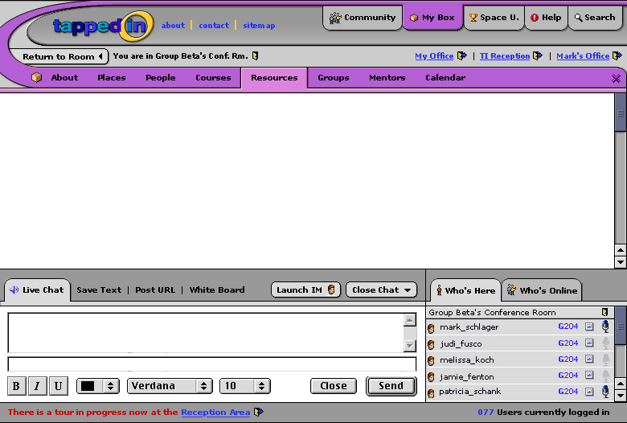

This should address most of the feedback. I like the direction this is heading; but I'll wait on the subtle, time-consuming graphical refinement issues until we have the layout set. Content fill-in is next, unless there are any major changes that need to be made.
I like this a lot. The only minor thing we might consider is rewording "Return to room" to say instead "View Room", since you are in the room even when you're viewing My Box (and could be having chat with people in the room as you're looking at My Box). You're not really returning per se, since you're there already; you're just focusing elsewhere at the moment.
I agree with Patti: the wording should reflecting 'viewing' rather than 'being'. If I click on My Box again, does it close My Box and I'm then viewing the room? If I view the room, when I return to My Box is what I see where I left off (ie in the middle of opening a file in My Box?) I liked the idea of toggling because it made it possible conceptually to move back and forth without loosing what you were doing. (I'm living dangerously right now using Netscape on a Mac so we'll see if I loose what I just wrote!)
I agree that the concept of toggling (if possible Patti?) is a good one, but I'll have to think about ways of making this work visually. Feasibly, the "view room" tab could be dynamic and always represent either the room or the last tab-menu-item. Another idea would be to make the top tabs more like buttons that could have definite down states- like on a stereo system that has "CD/tape/tuner/video" buttons that stay pressed until a new option is selected. That way the user could tell that they haven't lost their last choice just by viewing the room. Or maybe just the purple color remains underneath the grey bar at the very top so that it's evident your last selection is still "present" in the system.
